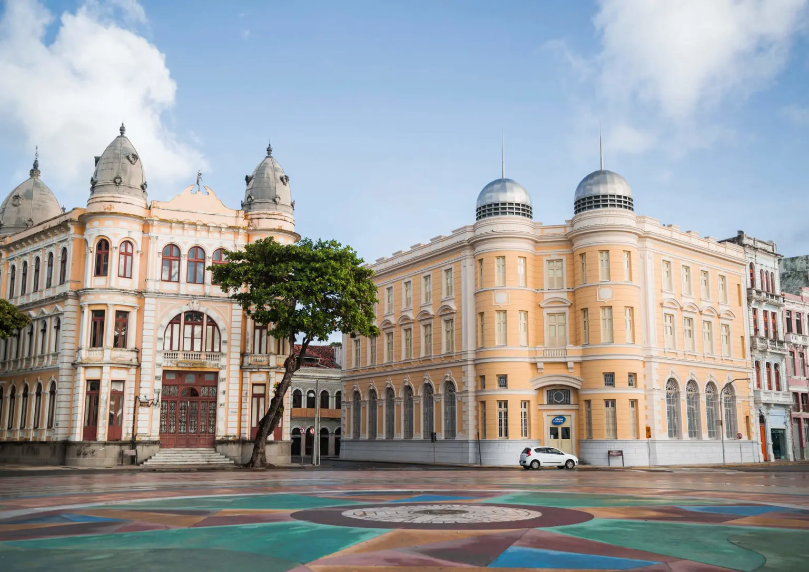

Na cidade de Recife temos a famosa Praça do marco Zero

A Praça do Marco Zero não é apenas o epicentro cultural de Recife, mas também o início de os caminhos de Pernambuco. Neste artigo, vamos te contar um pouco do que rola no local e arredores dessa região histórica e ao mesmo tempo contemporânea, por ser tão frequentada e amada pelos moradores da cidade. A praça BARÃO DO RIO BRANCO Conhecida pelo seu nome popular Praça do Marco Zero, na verdade, é um apelido – o local se chama Praça Barão do Rio Branco e está localizada no Bairro do Recife, o Centro Histórico da cidade, que também atende por outra alcunha, mais popular: Recife Antigo. Além de dar o nome oficial à praça, o Barão do Rio Branco também está representado no local por uma estátua em bronze de 2,80m de altura, feita pelo escultor francês Félix Charpentier. O nome de Praça do Marco Zero se popularizou por conta da instalação, em 31 de janeiro de 1938, do Marco Zero de Recife, doado à cidade pelo Automóvel Clube de Pernambuco. A placa redonda posicionada na praça simboliza o centro geográfico de onde partem as medições para todas as estradas de Pernambuco.
Associação Comercial de Pernambuco
Inaugurado em 2012, o Centro de Artesanato de Pernambuco rapidamente se tornou uma das referências da Praça do Marco Zero, tanto para turistas quanto para os moradores de Recife.Vista privilegiada para o mar e mais de 25 mil peças à venda, feitas à mão por cerca de 1,8 mil artesãos de todos os cantos de Pernambuco.O centro conta com divisões como sala de estar, quarto, sala de jantar e outros cômodos de uma casa, para que os visitantes possam visualizar como as peças artesanais poderiam ficar em seus lares. E as peças são feitas de matérias-primas das mais diversas, como renda, madeira, metal, cerâmica e vidro, entre outros.